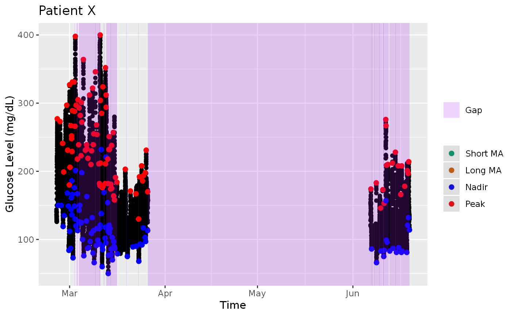

mage_cross_single.RdThis function is an internal function used by "mage". The function will calculate the Mean Amplitude of Glycemic Excursions (MAGE) on all the values of the inputted data set. To calculate separate MAGE values for a group of subjects, use the "mage" function.
mage_cross_single( data, short_ma = 5, long_ma = 23, type = c("auto", "plus", "minus"), plot = FALSE, interval = NA, dateformat = "%Y-%m-%d %H:%M:%S", title = NA, xlab = NA, ylab = NA )
| data | Data Frame object with column names "id", "time", and "gl" OR numeric vector of glucose values (plot won't work with vector) |
|---|---|
| short_ma | Integer for period length of the short moving average. Must be positive and less than "long_ma". (Recommended <15) |
| long_ma | Integer for period length for the long moving average. (Recommended >20) |
| type | One of "plus", "minus", "auto" (Default: auto). Algorithm will either calculate MAGE+ (nadir to peak), MAGE- (peak to nadir), or automatically choose based on the first countable excursion. |
| plot | Boolean. Returns ggplot if TRUE. |
| interval | Integer for time interval in minutes between glucose readings. Function will auto-magically determine the interval if not specified. (Only used to calculate the gaps shown on the ggplot) |
| dateformat | POSIXct time format for time of glucose readings. Highly recommended to set if glucose times are in a different format. |
| title | Title for the ggplot. Defaults to "Glucose Trace - Subject [ID]" |
| xlab | Label for x-axis of ggplot. Defaults to "Time" |
| ylab | Label for y-axis of ggplot. Defaults to "Glucose Level" |
The numeric MAGE value for the inputted glucose values or a ggplot if plot = TRUE
See "mage".
Nathaniel Fernandes
data(example_data_5_subject) mage_cross_single( example_data_5_subject, short_ma = 4, long_ma = 24, type = 'plus')#> [1] 122.5248mage_cross_single( example_data_5_subject, dateformat="%m-%d-%Y %H:%M:%S")#> [1] 122.67mage_cross_single( example_data_5_subject, plot=TRUE, interval=15, title="Patient X", xlab="Time", ylab="Glucose Level (mg/dL)")